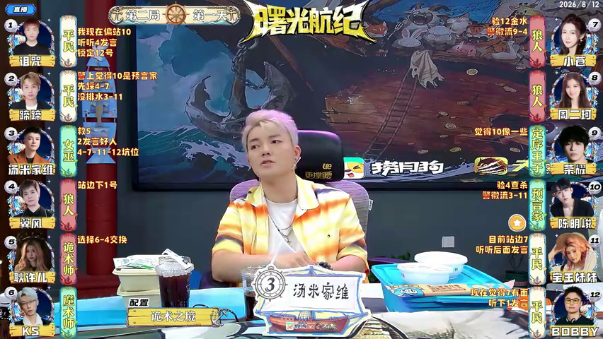

20260812 正赛 第十一期 Day-2 第一局-预女猎白混
机器整理或已入库均不代表人工核实；请依据原文和来源逐项复核。
文字补充与具体疑点
逐句核对角色和两轮行动。混血儿7号选择5号狼人为榜样，明确为狼人混；首夜11号预言家被救起，4号平民首日被放逐并将警徽交给12号女巫。第二夜狼刀6号、女巫毒杀10号，8号自爆后狼队宣布两刀目标为1号平民与7号混血儿并成功屠民获胜；该白天拍刀没有模板专用槽，未误记为其他身份技能。
AI已核实 · 第2日狼队拍刀事件槽位：目标1、7及拍刀成功明确，但预女猎白混模板没有白天狼队拍刀的合法slot；不强套hunter_shot或其他角色槽。
狼人选择拍刀，狼人可拍两刀，给出的道路是一号平民和7号混血儿
转写时间：01:40:14.680
核查结论与依据
终局狼队拍刀选择1号平民和7号混血儿，拍刀成功并由狼队获胜；模板无此终局动作槽，不误记为猎人开枪。 依据与推断：完整终局转写出现狼人选择拍刀、双目标1和7，并在后文结算狼队胜利。此为终局战术，不应塞入普通角色技能事件。 来源 data/seasons/S22/第12周_正赛第11期/2026-08-12/2026-08-12_S22_第12周_正赛第11期_第01局_预女猎白混__BV1JNgj6gEty_P01_CID40850818481.平台AI字幕_ai-zh_01_5cf4b2d65e.原始.json · 1:39:36–1:40:27 原句：这也掐了好了 有了第一局游戏结束了 预女猎白混血人版型预言家 11号女巫 12号猎人 3号白神 2号狼人 5号八号九号 10号平民一号4号六号 本球游戏的混血儿为7号 榜样是5号狼人 本球游戏为狼人混 首夜狼人击杀11号预言家女巫开药解救行程 平安夜当夜 预言家验证12号玩家为好人身份上警环节 4号平民获得警徽 第一天白天 4号平民被抗推出局 警徽交至12号 女巫入夜 狼人击杀6号平民 女巫毒杀10号狼人 60双死 预言家验证8号玩家为狼人身份 第二天白天 8号狼人自爆入夜 狼人选择拍刀 狼人可拍两刀 给出的道路是一号平民和7号混血儿 游戏结束 狼人阵营拍刀成功 屠民获胜 好各位大佬老师们 这里是京城大赛第22季曙光航记
AI已核实 · 7号学习目标：学习候选无法对应已知机械狼座位，未移植给其他身份
同轮转写上下文
首夜狼人击杀11号预言家女巫开药解救行程 平安夜当夜 预言家验证12号玩家为好人身份上警环节 4号平民获得警徽
待核候选：5
转写时间：01:39:51.690
核查结论与依据
混血儿7号选择5号狼人为榜样；榜样只记在选择事件中，不写入混血儿座位属性。 依据与推断：身份名单/后续称谓确认混血儿座位，复盘原句直接给出其选择对象；因此在mixed_blood_model事件记录唯一榜样，不把榜样复制成混血儿底牌、learning_target或learned_role。 来源 data/seasons/S22/第12周_正赛第11期/2026-08-12/2026-08-12_S22_第12周_正赛第11期_第01局_预女猎白混__BV1JNgj6gEty_P01_CID40850818481.平台AI字幕_ai-zh_01_5cf4b2d65e.原始.json · 1:39:36–1:40:27 原句：这也掐了好了 有了第一局游戏结束了 预女猎白混血人版型预言家 11号女巫 12号猎人 3号白神 2号狼人 5号八号九号 10号平民一号4号六号 本球游戏的混血儿为7号 榜样是5号狼人 本球游戏为狼人混 首夜狼人击杀11号预言家女巫开药解救行程 平安夜当夜 预言家验证12号玩家为好人身份上警环节 4号平民获得警徽 第一天白天 4号平民被抗推出局 警徽交至12号 女巫入夜 狼人击杀6号平民 女巫毒杀10号狼人 60双死 预言家验证8号玩家为狼人身份 第二天白天 8号狼人自爆入夜 狼人选择拍刀 狼人可拍两刀 给出的道路是一号平民和7号混血儿 游戏结束 狼人阵营拍刀成功 屠民获胜 好各位大佬老师们 这里是京城大赛第22季曙光航记
AI已核实 · 7号学习形态：学习候选无法对应已知机械狼座位，未移植给其他身份
同轮转写上下文
首夜狼人击杀11号预言家女巫开药解救行程 平安夜当夜 预言家验证12号玩家为好人身份上警环节 4号平民获得警徽
待核候选：狼人
转写时间：01:39:51.690
核查结论与依据
混血儿7号选择5号狼人为榜样；榜样只记在选择事件中，不写入混血儿座位属性。 依据与推断：身份名单/后续称谓确认混血儿座位，复盘原句直接给出其选择对象；因此在mixed_blood_model事件记录唯一榜样，不把榜样复制成混血儿底牌、learning_target或learned_role。 来源 data/seasons/S22/第12周_正赛第11期/2026-08-12/2026-08-12_S22_第12周_正赛第11期_第01局_预女猎白混__BV1JNgj6gEty_P01_CID40850818481.平台AI字幕_ai-zh_01_5cf4b2d65e.原始.json · 1:39:36–1:40:27 原句：这也掐了好了 有了第一局游戏结束了 预女猎白混血人版型预言家 11号女巫 12号猎人 3号白神 2号狼人 5号八号九号 10号平民一号4号六号 本球游戏的混血儿为7号 榜样是5号狼人 本球游戏为狼人混 首夜狼人击杀11号预言家女巫开药解救行程 平安夜当夜 预言家验证12号玩家为好人身份上警环节 4号平民获得警徽 第一天白天 4号平民被抗推出局 警徽交至12号 女巫入夜 狼人击杀6号平民 女巫毒杀10号狼人 60双死 预言家验证8号玩家为狼人身份 第二天白天 8号狼人自爆入夜 狼人选择拍刀 狼人可拍两刀 给出的道路是一号平民和7号混血儿 游戏结束 狼人阵营拍刀成功 屠民获胜 好各位大佬老师们 这里是京城大赛第22季曙光航记
AI已核实 · 轮次数：文字核对轮数与现有轮次不同，未自动删除记录
同轮转写上下文
第二天白天 8号狼人自爆入夜 狼人选择拍刀 狼人可拍两刀 给出的道路是一号平民和7号混血儿 游戏结束 狼人阵营拍刀成功 屠民获胜 好各位大佬老师们 这里是京城大赛第22季曙光航记
待核候选：2
转写时间：01:40:12.190
核查结论与依据
该局只有两轮；第二天自爆后当夜终局拍刀，现有第3轮为空轮，应裁为2轮。 依据与推断：复盘依次报告第一天放逐、第二天狼队击杀后第二天放逐/自爆并结束；当前第3轮没有新事件，故按source时间序列计两轮。 来源 data/seasons/S22/第12周_正赛第11期/2026-08-12/2026-08-12_S22_第12周_正赛第11期_第01局_预女猎白混__BV1JNgj6gEty_P01_CID40850818481.平台AI字幕_ai-zh_01_5cf4b2d65e.原始.json · 1:39:36–1:40:27 原句：这也掐了好了 有了第一局游戏结束了 预女猎白混血人版型预言家 11号女巫 12号猎人 3号白神 2号狼人 5号八号九号 10号平民一号4号六号 本球游戏的混血儿为7号 榜样是5号狼人 本球游戏为狼人混 首夜狼人击杀11号预言家女巫开药解救行程 平安夜当夜 预言家验证12号玩家为好人身份上警环节 4号平民获得警徽 第一天白天 4号平民被抗推出局 警徽交至12号 女巫入夜 狼人击杀6号平民 女巫毒杀10号狼人 60双死 预言家验证8号玩家为狼人身份 第二天白天 8号狼人自爆入夜 狼人选择拍刀 狼人可拍两刀 给出的道路是一号平民和7号混血儿 游戏结束 狼人阵营拍刀成功 屠民获胜 好各位大佬老师们 这里是京城大赛第22季曙光航记
画面座位姓名核对
按同日固定座位复用：2026-08-12。每座保留实际来源截图，未跨比赛日推定。
截图来源：BV1JNgj6gEaf · 00:35:40.200

| 座位 | 画面ID | 统一人名 | 来源 |
|---|---|---|---|
| 1号 | 诅咒 | 诅咒 | BV1JNgj6gEaf · 00:35:40.200 |
| 2号 | 蹄蹄 | 蹄蹄 | BV1JNgj6gEaf · 00:35:40.200 |
| 3号 | 汤米家维 | 汤米家维 | BV1JNgj6gEaf · 00:35:40.200 |
| 4号 | 翼风 | 翼风 | BV1JNgj6gEaf · 00:35:40.200 |
| 5号 | 耿许儿 | 耿许儿 | BV1JNgj6gEaf · 00:35:40.200 |
| 6号 | KS | KS | BV1JNgj6gEaf · 00:35:40.200 |
| 7号 | 小苍 | 小苍 | BV1JNgj6gEty · 00:47:44.700 |
| 8号 | 周二珂 | 周二珂 | BV1JNgj6gEaf · 00:35:40.200 |
| 9号 | 荣耀 | 荣耀 | BV1JNgj6gEaf · 00:35:40.200 |
| 10号 | 陈明峻 | 陈明峻 | BV1JNgj6gEta · 00:29:07.800 |
| 11号 | 宝玉妹妹 | 宝玉妹妹 | BV1JNgj6gEaf · 00:35:40.200 |
| 12号 | BOBBY | Bobby | BV1JNgj6gEaf · 00:35:40.200 |


座位身份
| 座位 | 姓名 | 身份 | 阵营 | 学习目标 | 学习形态 |
|---|---|---|---|---|---|
| 1 | 诅咒 | 平民 | 好人 | 未知 | 未知 |
| 2 | 蹄蹄 | 白神 | 好人 | 未知 | 未知 |
| 3 | 汤米家维 | 猎人 | 好人 | 未知 | 未知 |
| 4 | 翼风 | 平民 | 好人 | 未知 | 未知 |
| 5 | 耿许儿 | 狼人 | 狼人 | 未知 | 未知 |
| 6 | KS | 平民 | 好人 | 未知 | 未知 |
| 7 | 小苍 | 混血儿 | 狼人 | 未知 | 未知 |
| 8 | 周二珂 | 狼人 | 狼人 | 未知 | 未知 |
| 9 | 荣耀 | 狼人 | 狼人 | 未知 | 未知 |
| 10 | 陈明峻 | 狼人 | 狼人 | 未知 | 未知 |
| 11 | 宝玉妹妹 | 预言家 | 好人 | 未知 | 未知 |
| 12 | Bobby | 女巫 | 好人 | 未知 | 未知 |
开局夜晚
开局夜晚
| 事项 | 已知事实 |
|---|---|
| 混血儿选择榜样（首夜） | 混血儿选择榜样（首夜）：7号（混血儿，小苍）选择5号（狼人，耿许儿）；结果：混血儿7号选择5号狼人为榜样 |
| 狼队击杀 | 狼队击杀：狼队击杀11号（预言家，宝玉妹妹） |
| 女巫解药 | 女巫解药：12号（女巫，Bobby）使用解药11号（预言家，宝玉妹妹） |
| 预言家查验 | 预言家查验：11号（预言家，宝玉妹妹）查验12号（女巫，Bobby）；结果：好人 |
| 混血儿胜利阵营 | 混血儿胜利阵营：7号（混血儿，小苍）狼人阵营；结果：狼人混 |
展开转写未提供的2个槽位
| 事项 | 缺口 |
|---|---|
| 女巫毒药 | 女巫毒药：转写没有说明，留待补充 |
| 猎人技能 | 猎人技能：转写没有说明，留待补充 |
第1天白天
第1天白天
| 事项 | 已知事实 |
|---|---|
| 警长结果 | 4号（平民，翼风）当选警长 |
| 夜间出局 | 夜间出局：平安夜 |
| 放逐结果 | 4号（平民，翼风）被放逐 |
展开转写未提供的9个槽位
| 事项 | 缺口 |
|---|---|
| 上警名单 | 上警名单：转写没有说明，留待补充 |
| 警长投票 | 警长投票：转写没有说明，留待补充 |
| 猎人开枪 | 猎人开枪：转写没有说明，留待补充 |
| 警徽 | 警徽：转写没有说明，留待补充 |
| 白天发言顺序 | 白天发言顺序：转写没有说明，留待补充 |
| 放逐投票 | 放逐投票：转写没有说明，留待补充 |
| 狼人自爆 | 狼人自爆：转写没有说明，留待补充 |
| 白神公开身份 | 白神公开身份：转写没有说明，留待补充 |
| 混血儿个人胜利条件 | 混血儿个人胜利条件：转写没有说明，留待补充 |
第1天夜晚
第1天夜晚
| 事项 | 已知事实 |
|---|---|
| 狼队击杀 | 狼队击杀：狼队击杀6号（平民，KS） |
| 女巫毒药 | 女巫毒药：12号（女巫，Bobby）使用毒药10号（狼人，陈明峻） |
| 预言家查验 | 预言家查验：11号（预言家，宝玉妹妹）查验8号（狼人，周二珂）；结果：狼人 |
展开转写未提供的4个槽位
| 事项 | 缺口 |
|---|---|
| 混血儿选择榜样（首夜） | 混血儿选择榜样（首夜）：转写没有说明，留待补充 |
| 女巫解药 | 女巫解药：转写没有说明，留待补充 |
| 猎人技能 | 猎人技能：转写没有说明，留待补充 |
| 混血儿胜利阵营 | 混血儿胜利阵营：转写没有说明，留待补充 |
第2天白天
第2天白天
| 事项 | 已知事实 |
|---|---|
| 夜间出局 | 夜间出局：6号（平民，KS）、10号（狼人，陈明峻） |
| 狼人自爆 | 狼人自爆：8号（狼人，周二珂）自爆 |
展开转写未提供的10个槽位
| 事项 | 缺口 |
|---|---|
| 上警名单 | 上警名单：转写没有说明，留待补充 |
| 警长投票 | 警长投票：转写没有说明，留待补充 |
| 警长结果 | 警长结果：转写没有说明，留待补充 |
| 猎人开枪 | 猎人开枪：转写没有说明，留待补充 |
| 警徽 | 警徽：转写没有说明，留待补充 |
| 白天发言顺序 | 白天发言顺序：转写没有说明，留待补充 |
| 放逐投票 | 放逐投票：转写没有说明，留待补充 |
| 放逐结果 | 放逐结果：转写没有说明，留待补充 |
| 白神公开身份 | 白神公开身份：转写没有说明，留待补充 |
| 混血儿个人胜利条件 | 混血儿个人胜利条件：转写没有说明，留待补充 |
复盘原文对照
复盘状态：已定位候选复盘，待回听
复盘区间：01:39:36.580 – 01:40:27.840。播放到复盘末尾会自动暂停。
选择一段原文可跳转到音频时间点。
| # | 时间 | 复盘原文 | 音频 |
|---|---|---|---|
| 1 | 01:39:36.580 – 01:39:37.460 | 这也掐了好了 | |
| 2 | 01:39:37.460 – 01:39:39.299 | 有了第一局游戏结束了 | |
| 3 | 01:39:39.299 – 01:39:40.699 | 预女猎白混血人版型预言家 | |
| 4 | 01:39:40.699 – 01:39:41.419 | 11号女巫 | |
| 5 | 01:39:41.419 – 01:39:42.179 | 12号猎人 | |
| 6 | 01:39:42.179 – 01:39:43.380 | 3号白神 | |
| 7 | 01:39:43.380 – 01:39:44.260 | 2号狼人 | |
| 8 | 01:39:44.260 – 01:39:45.340 | 5号八号九号 | |
| 9 | 01:39:45.340 – 01:39:47.320 | 10号平民一号4号六号 | |
| 10 | 01:39:47.320 – 01:39:48.860 | 本球游戏的混血儿为7号 | |
| 11 | 01:39:48.860 – 01:39:50.380 | 榜样是5号狼人 | |
| 12 | 01:39:50.380 – 01:39:51.690 | 本球游戏为狼人混 | |
| 13 | 01:39:51.690 – 01:39:54.690 | 首夜狼人击杀11号预言家女巫开药解救行程 | |
| 14 | 01:39:54.690 – 01:39:55.370 | 平安夜当夜 | |
| 15 | 01:39:55.370 – 01:39:58.970 | 预言家验证12号玩家为好人身份上警环节 | |
| 16 | 01:39:58.970 – 01:40:00.750 | 4号平民获得警徽 | |
| 17 | 01:40:00.750 – 01:40:01.590 | 第一天白天 | |
| 18 | 01:40:01.590 – 01:40:03.430 | 4号平民被抗推出局 | |
| 19 | 01:40:03.430 – 01:40:04.550 | 警徽交至12号 | |
| 20 | 01:40:04.550 – 01:40:05.750 | 女巫入夜 | |
| 21 | 01:40:05.750 – 01:40:07.110 | 狼人击杀6号平民 | |
| 22 | 01:40:07.110 – 01:40:08.950 | 女巫毒杀10号狼人 | |
| 23 | 01:40:08.950 – 01:40:09.830 | 60双死 | |
| 24 | 01:40:09.830 – 01:40:12.190 | 预言家验证8号玩家为狼人身份 | |
| 25 | 01:40:12.190 – 01:40:12.930 | 第二天白天 | |
| 26 | 01:40:12.930 – 01:40:14.680 | 8号狼人自爆入夜 | |
| 27 | 01:40:14.680 – 01:40:15.960 | 狼人选择拍刀 | |
| 28 | 01:40:15.960 – 01:40:17.160 | 狼人可拍两刀 | |
| 29 | 01:40:17.160 – 01:40:19.860 | 给出的道路是一号平民和7号混血儿 | |
| 30 | 01:40:19.860 – 01:40:20.840 | 游戏结束 | |
| 31 | 01:40:20.840 – 01:40:21.940 | 狼人阵营拍刀成功 | |
| 32 | 01:40:21.940 – 01:40:23.520 | 屠民获胜 | |
| 33 | 01:40:24.020 – 01:40:24.980 | 好各位大佬老师们 | |
| 34 | 01:40:24.980 – 01:40:27.840 | 这里是京城大赛第22季曙光航记 |
问题与未映射事件
问题清单
- 第2日狼队拍刀事件槽位：目标1、7及拍刀成功明确，但预女猎白混模板没有白天狼队拍刀的合法slot；不强套hunter_shot或其他角色槽。
- seats[7].learning_target：学习候选无法对应已知机械狼座位，未移植给其他身份
- seats[7].learned_role：学习候选无法对应已知机械狼座位，未移植给其他身份
- rounds：文字核对轮数与现有轮次不同，未自动删除记录
未映射事件
- 暂无未映射事件。
本局文件与状态
状态：已入库待复核
复核备注：AI疑点推理核查：4项已核实，0项仍待review。 本局判断：终局狼队拍刀选择1号平民和7号混血儿，拍刀成功并由狼队获胜；混血儿7号选择5号狼人为榜样；混血儿7号选择5号狼人为榜样
入库状态只表示数据已写入数据库，不代表人工核实。
数据库收据
{
"game_id": "0a26b472-f8e3-4ee7-8d37-1d31ac1d520e",
"slug": "bili-BV1JNgj6gEty-p01-g01",
"people": 16,
"seats": 12,
"rounds": 2,
"night_slots": 7,
"day_slots": 12,
"event_records": 38,
"source_files": 4
}